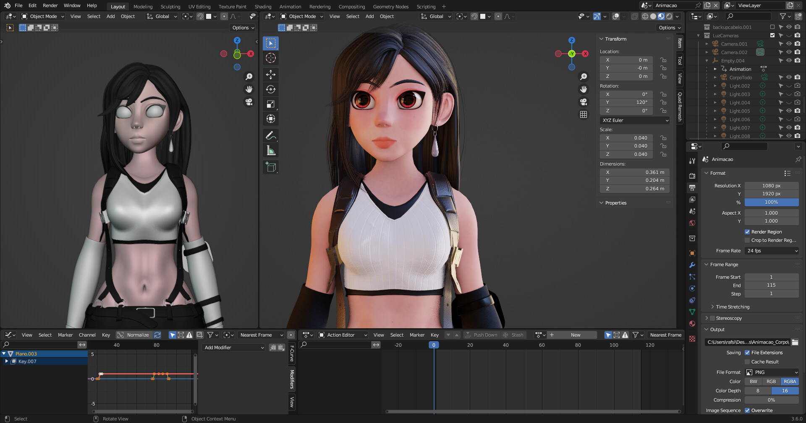

Tifa Lockhart 3D (Stylized/Cartoon) - Final Fantasy 7
July 19, 2023
In this personal project, my objective was to craft an exquisitely stylized rendition of Final Fantasy 7's iconic character - Tifa Lockhart. With Brian Sculpts' videos tutorial, I followed his tutorial on character design and helped me create a workflow for future projects (Sculpt, Remesh, Retopology, Rig, Modeling, Texture and Render). Immersing myself in this creative pursuit, I undertook the arduous task of making a simpler and more whimsical version of Tifa, infusing her with a charming cartoon-like style. To bring this vision to life, I used the 3D software Blender.
Tifa Lockhart Turntable
Tifa render Cycles
Tifa render Cycles

Blender Process
Blender Process ScreenShot
Software used: